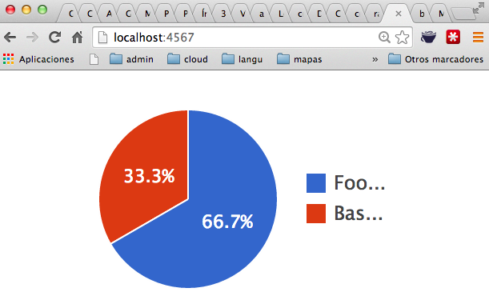

Siguiente: Sequel y Sinatra Subir: DataMapper y Sinatra Anterior: Práctica: Acortador de URLs Índice General Índice de Materias
En esta práctica extendemos la anterior 46.9 con información estadística acerca de las visitas. Se pide que se presenten gráficos estadísticos (barras, etc.) del número de visitas por día, por país, etc.
La información de las visitas
se guardará en una tabla Visit.
Cada objeto Visit representará una visita
a la URL corta y contendrá información acerca de la visita:
Visit.
class ShortenedUrl include DataMapper::Resource property :id, Serial property :short, Text property :url, Text has n, :visits end
Visit y que se le asocia con el
objeto de la tabla principal intentaremos obtener la dirección IP
y a partir de ella la información sobre el país.
Veamos una sesión con Pry para obtener el país asociado con una IP:
[1] pry(main)> require 'restclient' => true [2] pry(main)> require 'xmlsimple' => true
[3] pry(main)> xml = RestClient.get "http://api.hostip.info/get_xml.php?ip=193.145.124.21"; [4] pry(main)> puts xml <?xml version="1.0" encoding="ISO-8859-1" ?> <HostipLookupResultSet version="1.0.1" xmlns:gml="http://www.opengis.net/gml" xmlns:xsi="http://www.w3.org/2001/XMLSchema-instance" xsi:noNamespaceSchemaLocation="http://www.hostip.info/api/hostip-1.0.1.xsd"> <gml:description>This is the Hostip Lookup Service</gml:description> <gml:name>hostip</gml:name> <gml:boundedBy> <gml:Null>inapplicable</gml:Null> </gml:boundedBy> <gml:featureMember> <Hostip> <ip>193.145.124.21</ip> <gml:name>(Unknown city)</gml:name> <countryName>SPAIN</countryName> <countryAbbrev>ES</countryAbbrev> <!-- Co-ordinates are unavailable --> </Hostip> </gml:featureMember> </HostipLookupResultSet> => nil [5] pry(main)> xml.class => String
[10] pry(main)> cc = XmlSimple.xml_in(xml.to_s)
=> {"version"=>"1.0.1",
"xmlns:gml"=>"http://www.opengis.net/gml",
"xmlns:xsi"=>"http://www.w3.org/2001/XMLSchema-instance",
"xsi:noNamespaceSchemaLocation"=>
"http://www.hostip.info/api/hostip-1.0.1.xsd",
"description"=>["This is the Hostip Lookup Service"],
"name"=>["hostip"],
"boundedBy"=>[{"Null"=>["inapplicable"]}],
"featureMember"=>
[{"Hostip"=>
[{"ip"=>["193.145.124.21"],
"name"=>["(Unknown city)"],
"countryName"=>["SPAIN"],
"countryAbbrev"=>["ES"]}]}]}
[11] pry(main)> cc["featureMember"][0]['Hostip'][0]['countryAbbrev']
=> ["ES"]
To implement this, we use the after callback mechanism
in the Visit object, where we call a method after
the object is created.
after :create, :set_country
Para lograr que cada vez que se crea un objeto Visit se guarde el país
en la tabla Visit la clase será algo parecido a esto:
class Visit
include DataMapper::Resource
property :id, Serial
property :created_at, DateTime
property :ip, IPAddress
property :country, String
belongs_to :link
after :create, :set_country
def set_country
xml = RestClient.get "http://api.hostip.info/get_xml.php?ip=#{ip}"··
self.country = XmlSimple.xml_in(xml.to_s, ...
self.save
end
...
end
Este método ilustra múltiples formas de obtener la IP de la visita:
def get_remote_ip(env)
puts "request.url = #{request.url}"
puts "request.ip = #{request.ip}"
if addr = env['HTTP_X_FORWARDED_FOR']
puts "env['HTTP_X_FORWARDED_FOR'] = #{addr}"
addr.split(',').first.strip
else
puts "env['REMOTE_ADDR'] = #{env['REMOTE_ADDR']}"
env['REMOTE_ADDR']
end
end
Este ejemplo crguezl/sinatra-chartkick-example:
~/sinatra/sinatra-chartkik(master)]$ git remote -v origin git@github.com:crguezl/sinatra-chartkick-example.git (fetch) origin git@github.com:crguezl/sinatra-chartkick-example.git (push) [~/sinatra/sinatra-chartkik(master)]$ pwd -P /Users/casiano/local/src/ruby/sinatra/sinatra-chartkikmuestra como usar chartkick para generar gráficos:
[~/sinatra/sinatra-chartkik(master)]$ cat sinchart2.rb
require 'sinatra'
require 'sinatra/reloader' if development?
require 'chartkick'
template :layout do
<<LAYOUT
<html>
<head>
<script src="http://www.google.com/jsapi"></script>
<script src="chartkick.js"></script>
</head>
<body>
<%= yield %>
</body>
</html>
LAYOUT
end
template :index do
<<INDEX
<%= pie_chart({"Football" => 10, "Basketball" => 5}) %>
INDEX
end
get '/' do
erb :index
end
